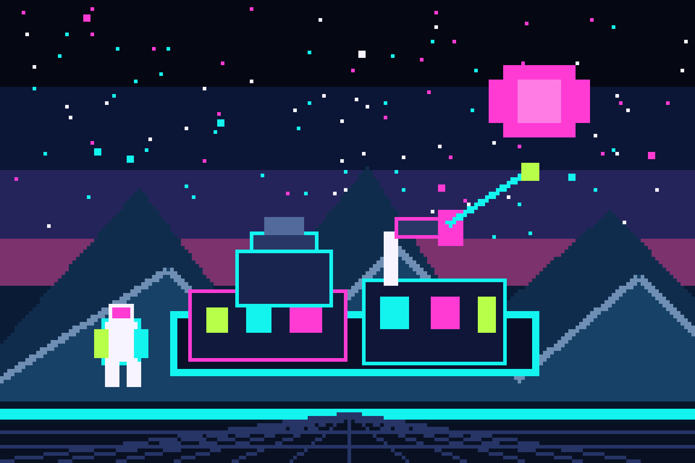
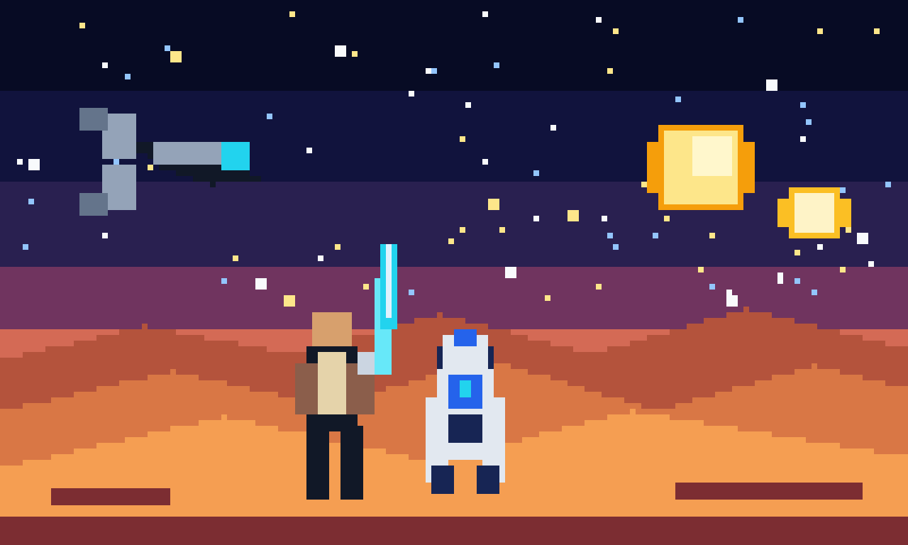

可复现像素示意图
雪山湖畔的未来观测站
由仓库脚本确定性绘制，使用网站同款青色、洋红与荧光绿配色，展示横向像素场景的构图参考。
一个稳定、可审查、不会擅自重复计费的 GPT-Image 命令行工具。支持 CC-Switch，也支持任意 OpenAI 兼容中转站。
> gpt-image generate
"霓虹雨夜的 8-bit 城市"
--size landscape --quality high
✓ IMAGE VALIDATED / SAVED01 ONE-LINE SETUP
请从 https://github.com/Lijinzh/gpt-image-2-cli 安装并配置 gpt-image-2-cli，优先读取我本机当前的 CC-Switch Codex 供应商；先运行 gpt-image doctor 和一次不计费的 --dry-run，禁止打印、复制或保存 API Key；如果没有 CC-Switch，就指导我在本机设置 GPT_IMAGE_API_BASE 和 GPT_IMAGE_API_KEY，不要让我在聊天中粘贴 Key；验证成功后告诉我安装位置和一条可直接生成图片的命令。
 提示词只会写入剪贴板；真实 API Key 始终留在使用者自己的电脑上。
提示词只会写入剪贴板；真实 API Key 始终留在使用者自己的电脑上。
02 QUICK START
用 uv 从 GitHub 安装 CLI。
uv tool install "git+https://github.com/Lijinzh/gpt-image-2-cli.git"
只读检查当前供应商、模型与网络配置。
gpt-image doctor
先预览请求，不生成图片，也不产生模型费用。
gpt-image generate "..." --dry-run
确认参数后生成，并校验格式与真实像素尺寸。
gpt-image generate "..." -o result.png
PLAY COMMAND LAB
选择提示词、画幅和质量，页面会实时生成一条可执行命令。这里不会连接 API，也不会读取任何密钥。
03 IMAGE GALLERY
所有示意图均清楚标注来源。点击任意提示词，可直接送进上面的命令实验台。

由仓库脚本确定性绘制，使用网站同款青色、洋红与荧光绿配色，展示横向像素场景的构图参考。

非官方致敬风格，不含官方 Logo；由仓库脚本确定性绘制。
蓝紫霓虹、密集高楼与反光街面，适合测试像素风场景。
中国科幻与复古街机色彩的组合，适合测试宽幅叙事构图。
04 BUILT FOR THE LONG RUN
05 API KEY SAFETY
CLI 只读访问当前用户的 CC-Switch 配置，或者从环境变量获取凭据。它没有 --api-key 参数，不会把 Key 写入图片、请求元数据或公开日志。
.env、生成结果与请求元数据06 USER FEEDBACK
不熟悉 GitHub 也没关系：在网页里写好问题，系统会自动整理成 Issue 标题和正文，再带你到 GitHub 做最后确认。
为什么还要确认一次？ 网站不会保存 GitHub Token，也不会代替用户公开发布内容。这样可以避免仓库权限泄露和匿名垃圾 Issue。
READY PLAYER?